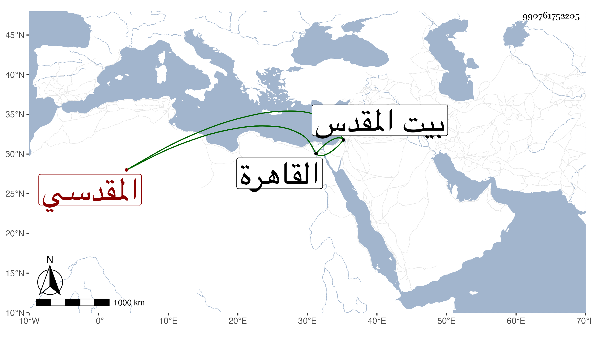

0902Sakhawi.DawLamic.ITO20230111-ara1.EIS1600.990761752205
Biography ID: 990761752205
339
عبد الهادي بن عبد الله بن خليل بن علي بن عمر بن مسعود الزين أو التقي بن العينائي الأسدابادي الأصل المقدسي نزيل القاهرة ويعرف كأبيه المذكور في المائة قبلها بالبسطامي . نشأ ببيت المقدس وأحب سماع الحديث وقال الشعر اللطيف قال شيخنا في معجمه لقيته في الرحلة ورافقني في السماع ثم قدم القاهرة فاجتمع عليه أتباع أبيه وراج أمره لكن بغته القدر فمات في سنة تسع ولم يكمل الثلاثين سمعت من نظمه وكان حسن التودد والخط يرحمه الله وذكره في الإنباء فقال كان شابا فاضلا ماهرا سمع الحديث ونظم الشعر وكتب الطباق ودار على الشيوخ ثم اجتمع عليه اتباع أبيه فتمشيخ فيهم ودخل القاهرة فاستوطنها وراج أمره بها حتى مات وله نحو الثلاثين سمعت من نظمه ببيت المقدس ورافقني في بعض السماع على بعض المشايخ أول سنة ثلاث ، وتبعه المقريزي في عقوده وقبره بحوش سعيد السعداء .
